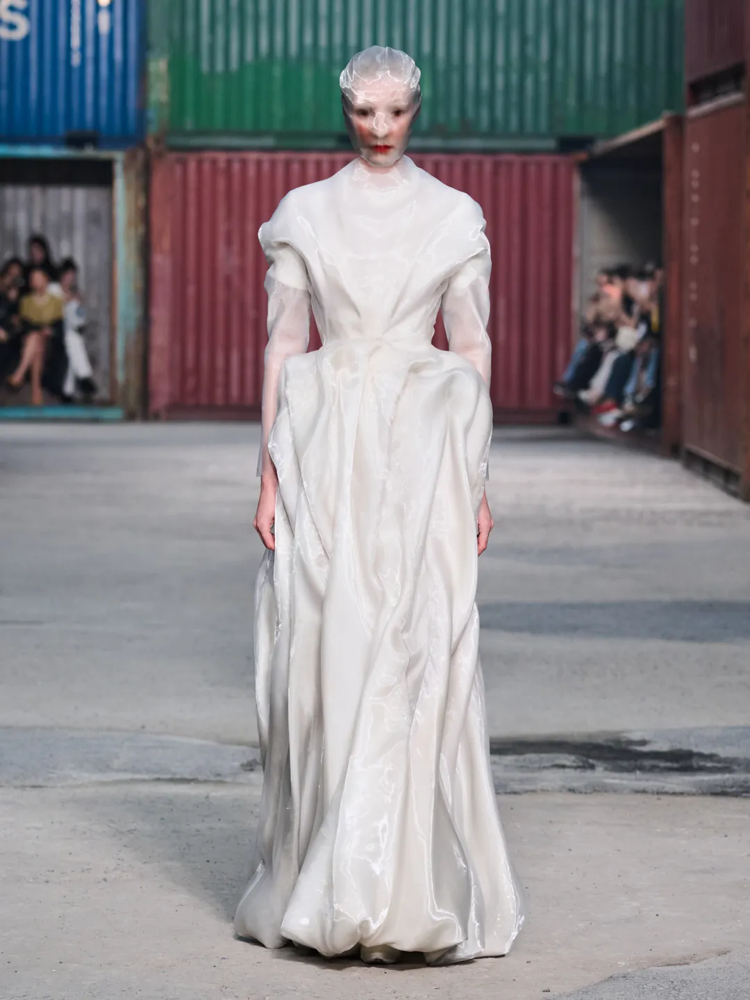

THE AFTER-IMAGE
AN ARCHIVE OF WHAT REMAINS.
Nº 001 — img/Look_1.jpg
Survolez : l'image rémanente apparaît en négatif.
Chapitre I
The
Runway
Soixante-seize passages, conservés dans leur ordre. Chaque photographie garde son numéro et son fichier source. Les planches ci-dessous recomposent la série comme un magazine déconstruit.
Source : img/Look_1.jpg → img/Look_76.jpg · 76 / 76 fichiers présents
Valeur mesurée automatiquement sur les pixels de la zone centrale de chaque photographie.
Chapitre II
Material
Memory
Une table de travail. Des fragments prélevés dans les photographies du défilé et des matières fabriquées pour cette archive se superposent. Déplacez-les, soulevez-les, frottez la feuille pour retrouver l'image dessous.
Fragments : recadrages des fichiers img/Look_N.jpg · Textures : générées procéduralement pour ce projet
Glisser : déplacer · Cliquer : soulever · Frotter la feuille : révéler · Flèches : déplacer au clavier
Chapitre III
Anatomy of
a Silhouette
Une planche d'étude consacrée à une seule silhouette — le Look 30, pièce centrale de l'archive. De la vue d'ensemble au détail, chaque étape sépare ce que l'on voit (OBSERVATION) de ce que l'on en pense (interprétation).
Chapitre IV
The
Trace
Votre parcours a laissé une trace : les looks consultés sont entourés, comme sur une étiquette. Composez à partir d'elle une relique — une affiche unique — puis exportez-la.
Les looks ouverts dans l'archive s'ajoutent automatiquement à votre trace.